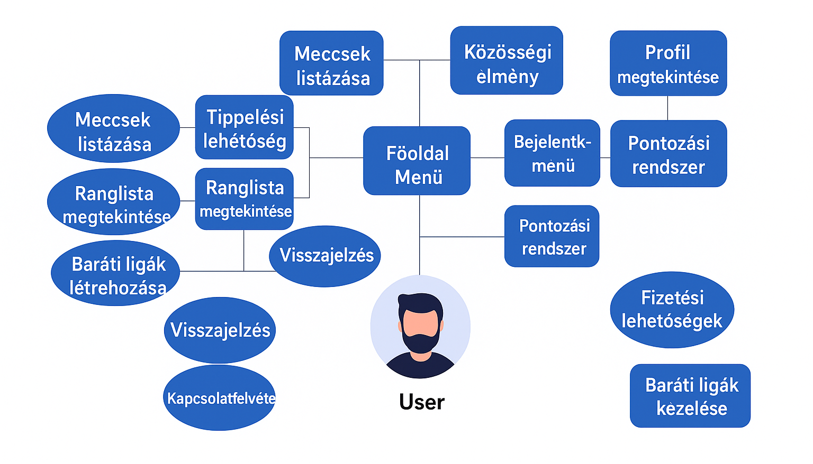

A Goal Diggers egy modern, játékos közösségi platform, amely új szintre emeli a futballmeccsek követését és élvezetét. Az alkalmazás segítségével a felhasználók egyszerűen és átlátható módon tippelhetnek a közelgő mérkőzések eredményeire, versenyezhetnek barátaikkal vagy más játékosokkal, és közben aktív részesei lehetnek egy futballrajongókból álló közösségnek.
A célunk egy olyan alkalmazás létrehozása, amely nem a pénznyereményre épít, hanem a szórakozásra és a közösségi élményre helyezi a hangsúlyt. A felhasználók pontokat gyűjthetnek a helyes tippekért, ranglistákon mérhetik össze tudásukat, valamint baráti ligákhoz is csatlakozhatnak.
Az alkalmazás egyszerű, mégis izgalmas módot kínál a mérkőzések követésére, a futball iránti szenvedély megélésére, és a közös élmények megosztására. A Goal Diggers célja, hogy minden meccs több legyen egy egyszerű eredménynél: egy kihívás, egy játék, és egy közösségi kaland.
A Goal Diggers alkalmazás egy közösségi tippjáték platform, amely a futballmérkőzések követésére, előrejelzésére és a közösségi élmény erősítésére fókuszál.
A rendszer a mérkőzésadatokat külső forrásokból (API) szerzi be, majd ezeket teszi elérhetővé a felhasználóknak tippeléshez és statisztikákhoz.
A mérkőzésadatokat megbízható sportadat-szolgáltató partnerektől (pl. football-data.org) szerezzük be.
A felhasználók csak a rendszer által biztosított mérkőzésekre adhatnak le tippeket.
A meccsekhez tartozó adatok (dátum, csapatok, kezdési idő, aktuális állás, végeredmény) automatikusan frissülnek.
Az ingyenes felhasználók:
A prémium csomagra előfizető felhasználók:
A prémium csomagok aktiválásához a rendszer külső fizetési szolgáltatóval (pl. Simple Pay) integrálódik.
Ez lehetővé teszi a biztonságos online fizetést, valamint az előfizetések megújítását és kezelését.
A Goal Diggers alkalmazás számos funkciót kínál a felhasználók számára, amelyek a focimeccsek követését és tippelését teszik szórakoztatóvá és interaktívvá.
Az alábbi diagram szemlélteti a Goal Diggers alkalmazás főbb funkcióit és azok használati eseteit:
A Use-Case diagram bemutatja a rendszer főbb szereplőit (felhasználók, adminisztrátorok) és az általuk végrehajtható műveleteket. Látható, hogy a felhasználók számára elérhetőek a tippelés, ranglisták követése, baráti ligák kezelése, míg az adminisztrátorok felelősek a mérkőzésadatok kezeléséért és a felhasználói fiókok moderálásáért.
A kezdőlapról elérhetjük az alábbi főbb menüpontokat: Meccsek, Tippelés, Ranglista, Ligák, Profil, Értesítések.
Ebben a menüpontban a felhasználó megtekintheti az összes közelgő és már lezajlott mérkőzést.
Minden mérkőzésnél látható a kezdési idő, a csapatok neve, valamint a végeredmény, ha a mérkőzés már befejeződött.
Itt lehetősége van a felhasználónak leadni a mérkőzésekre vonatkozó tippjeit.
A tippelés csak a mérkőzés kezdete előtt engedélyezett.
A felhasználó megadhatja a két csapat által szerzett gólok számát.
A ranglista menüpontban a felhasználók megnézhetik, hány pontot gyűjtöttek a tippjeik alapján.
Többféle ranglistát lehet megtekinteni: országos, baráti ligás és személyes.
A ligák menüpontban a felhasználó létrehozhat új baráti ligákat vagy csatlakozhat meglévő ligákhoz.
A ligákon belül külön ranglistát vezetünk az adott csoport tagjai között.
A profil menüpontban a felhasználó áttekintheti a saját statisztikáit: összes leadott tipp, helyes tippek száma, pontok, valamint a tippelési előzmények.
Az értesítések menüpontban megtekinthetők a rendszer által küldött emlékeztetők és információk, például a tippelési határidőkről, meccseredményekről vagy a ligákban történt változásokról.
A bejelentkezett felhasználók teljes funkcionalitást érhetnek el, míg a vendég felhasználók csak a mérkőzések listáját és a ranglisták összefoglalóját láthatják.
A helyes tippelésekért pontokat lehet gyűjteni.
Például: pontos találatért magasabb, a kimenetel helyes eltalálásáért alacsonyabb pont jár.
A felhasználó saját ligát hozhat létre, meghívhatja barátait, és a csoporton belül versenyezhet.
Az alkalmazás több nyelvet támogat (pl. magyar, angol, német), amelyet a profilbeállításokban lehet módosítani.
A prémium funkciók (hirdetésmentesség, extra statisztikák) eléréséhez előfizetés szükséges, amelyet Simple Pay integráción keresztül lehet teljesíteni.
A Goal Diggers egyik legfontosabb alapelve a megbízhatóság. Mivel az alkalmazás valós idejű adatokkal – mérkőzésinformációkkal, tippelési határidőkkel, pontszámításokkal – dolgozik, elsődleges cél, hogy minden felhasználó pontos és hiteles információkhoz jusson.
Az alkalmazás architektúrája felhőalapú infrastruktúrára épül, amely automatikus mentési és szinkronizációs folyamatokkal biztosítja az adatvesztés minimalizálását. Az összes kommunikáció titkosított csatornán (HTTPS/TLS) keresztül zajlik, ezáltal a felhasználói adatok és tippek biztonságban maradnak.
A megbízhatóság növelése érdekében a rendszer redundáns szervereken fut, így akár hirtelen megnövekedett terhelés – például nagy tornák vagy döntők idején – esetén is stabil marad. Az alkalmazás automatikus hibadetektáló és monitoring eszközökkel rendelkezik, amelyek azonnal jelzik a fejlesztői csapatnak az esetleges rendellenességeket.
A Goal Diggers úgy lett tervezve, hogy a lehető legszélesebb felhasználói kör számára könnyen elérhető és egyszerűen kezelhető legyen. A modern, letisztult felhasználói felület lehetővé teszi, hogy akár a technológiában kevésbé jártas futballrajongók is gyorsan eligazodjanak.
A használhatóságra kiemelt figyelmet fordítottunk a vizuális kialakításnál is: az intuitív ikonok, a kontrasztos színek és az egyszerű grafikai elemek hozzájárulnak a gyors és problémamentes kezelhetőséghez.
A Goal Diggers teljesítményének optimalizálása kulcsfontosságú volt, hogy a felhasználók élménye gördülékeny maradjon. A rendszer skálázható szerverinfrastruktúrára épül, amely képes kezelni a hirtelen megnövekedett adatforgalmat.
A teljesítmény folyamatos monitorozása és optimalizálása révén az alkalmazás megbízhatóan szolgálja ki a felhasználókat még csúcsidőszakokban is.
Minden nagy volumenű digitális platform esetében előfordulhatnak hibák, így a Goal Diggers sem teljesen mentes tőlük. A fejlesztés során azonban már a tervezési szakaszban külön figyelmet fordítottunk a hibák megelőzésére és gyors kezelésére.
A leggyakrabban előforduló problémák:
A hibák jelentését a felhasználók közvetlenül az alkalmazásból tehetik meg a beépített hibabejelentő funkció segítségével. A fejlesztői csapat folyamatosan figyeli a felhasználói visszajelzéseket és a háttérrendszer logjait, így a problémák gyorsan azonosíthatók és javíthatók.
A Goal Diggers fejlesztése során fontos szempont volt, hogy az alkalmazás minél szélesebb körben elérhető legyen, miközben megfelelő teljesítményt biztosít a különböző eszközökön.
Ezek a követelmények biztosítják, hogy az alkalmazás gyorsan és megbízhatóan fusson, még akkor is, ha a felhasználó nagyobb mérkőzési adatbázist böngész vagy egyszerre több funkciót használ.
A projekt egyik kulcsfontosságú eleme az átláthatóság és a kód újrafelhasználhatósága. A Goal Diggers fejlesztőcsapata kiemelten fontosnak tartja, hogy a szoftver fenntartható és egyszerűen bővíthető legyen, hiszen a későbbi frissítések és új funkciók integrálása így sokkal hatékonyabban és gyorsabban megvalósítható.
Ez a fegyelmezett, szabványokon alapuló fejlesztési gyakorlat hozzájárul ahhoz, hogy a Goal Diggers hosszú távon is megbízhatóen működjön, és a fejlesztés folyamatosan bővíthető legyen.
A fejlesztéshez korszerű, iparági szabványoknak megfelelő szoftvereket és környezetet használunk, amelyek támogatják a gyors és hatékony munkavégzést.
A kód újrafelhasználhatósága biztosítja, hogy ugyanaz a logika mindkét platformon (iOS és Android) működjön, ezzel jelentősen csökkentve a fejlesztési időt és a hibalehetőségeket.
A Goal Diggers fontosnak tartja, hogy a felhasználók bármikor könnyen hozzáférjenek a szükséges információkhoz és segítséghez. Ezért a felület részeként létrehoztunk egy beépített "Support" menüpontot, amely több alfunkciót tartalmaz.
Ez a felépítés garantálja, hogy a felhasználók a lehető leggyorsabban választ kapjanak kérdéseikre, ezáltal csökkenjen a frusztráció és nőjön a felhasználói élmény.
A Goal Diggers alkalmazás több külső szolgáltatást és komponenst integrál a hatékony működés érdekében.
Ez a szolgáltatás biztosítja alkalmazásunk online elérhetőségét, biztonságos adattárolását és a felhasználói fiókok kezelését. A szerverek folyamatos működését, biztonsági mentéseket és technikai támogatást is tartalmazza.
Szolgáltató: WebHost Pro Kft.
Költség: 89.500 Ft/év
A megoldás felelős az alkalmazás esztétikus megjelenéséért, intuitív kezelhetőségéért és reszponzív designjáért. A fejlesztőcsapat folyamatosan optimalizálja a felületet a felhasználói visszajelzések alapján.
Szolgáltató: DesignTech Solutions Zrt.
Költség: 49.990 Ft/hó
A prémium szolgáltatások eléréséhez és a biztonságos tranzakciók lebonyolításához integráltuk ezt a megoldást. A rendszer támogatja a bankkártyás fizetéseket, elektronikus pénztárcákat és előfizetéses számlázást.
Szolgáltató: PaySecure Hungary Kft.
Költség: Tranzakciós díj (1.9%) + havi fix díj 8.500 Ft
A felhasználói vásárlások és előfizetések nyilvántartásáért, számlakiállításáért és adókötelezettségek teljesítéséért felelős komponens. Teljes mértékben integrálódik a magyar adóhatóságok rendszereivel.
Szolgáltató: InvoiceMaster Kft.
Költség: 28.900 Ft/év
Az alkalmazás eljuttatása a végfelhasználókhoz a legnépszerűbb mobil platformokon keresztül. A szolgáltatás magában foglalja az appok feltöltését, verziókezelését és értékesítési statisztikák nyomon követését.
Szolgáltató: Google & Apple értékesítési platformjai
Költség: Éves regisztrációs díj (Google: 12.000 Ft, Apple: 18.000 Ft) + értékesítési jutalék (15-30%)
A felhasználói értesítések, e-mail kampányok és push üzenetek kezeléséért felelős megoldás. Biztosítja, hogy a fontos információk időben érkezzenek meg a felhasználókhoz.
Szolgáltató: NotifyPro Kft.
Költség: 6.500 Ft/hó (max. 10.000 felhasználóig)
A felhasználói viselkedés elemzésére, teljesítménymetrikák gyűjtésére és üzleti jelentések generálására szolgáló eszköz. Segítségével optimalizálhatjuk a felhasználói élményt és az üzleti folyamatokat.
Szolgáltató: DataInsight Zrt.
Költség: 14.800 Ft/hó
A Goal Diggers alkalmazás fejlesztése során számos jogszabályi előírást és technikai szabványt betartunk, hogy biztosítsuk a rendszer megbízhatóságát és megfelelőségét.
A szoftverfejlesztést és forgalmazást érintő törvényi kötelezettségek betartása elengedhetetlen. A magyar jogrendszer alapján a gyártó köteles minimális egyéves jótállási időszakot biztosítani a termékre vonatkozóan. Ez gyakorlatban azt jelenti, hogy a programnak ezen időtartam alatt minden funkcionális és műszaki követelménynek megfelelően kell működnie.
A fenti szabványok betartását rendszeres auditálással ellenőrizzük, melyet negyedévenként végez el egy független minőségbiztosítási csapat. A nem megfelelőségeket dokumentáljuk és azok kijavítását prioritásként kezeljük.
| Angol kifejezés | Magyar megfelelő |
|---|---|
| bug | hiba egy számítógépes programban vagy rendszerben |
| account | felhasználói fiók |
| update | frissítés |
| support | Segítség, kapcsolat a felhasználó és a fejlesztő között |
| szerver | Olyan számítógép vagy szoftver, amely a weboldalakat szolgálja ki az interneten. Feladata a kliensek, például webböngészők által kért webes tartalmak, például HTML oldalak vagy képek továbbítása a hálózaton keresztül. |
| GUI | Az a felület, amit a felhasználó lát |
| cloud | Felhő alapú adattárolási modell |